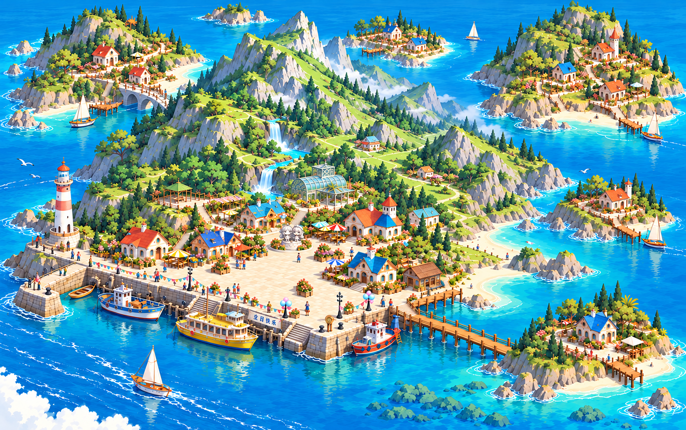

不吱岛 · 群岛地图画稿
新版静态重绘画稿：小型无彩绘双人石雕移到广场后侧中心花坛，生日横幅沿登岛入口旁的码头栏杆悬挂，不跨台阶。整图重新绘制并减少颗粒杂点，整理建筑轮廓、山体色块与水面笔触；保留尖峰谷地的纵深、六座岛屿、沙滩、灯塔船队及开放航道。尚未替换现有网页。

如果图片仍未显示，请点击上方「打开原图 / 放大查看」。
新版静态重绘画稿：小型无彩绘双人石雕移到广场后侧中心花坛，生日横幅沿登岛入口旁的码头栏杆悬挂，不跨台阶。整图重新绘制并减少颗粒杂点，整理建筑轮廓、山体色块与水面笔触；保留尖峰谷地的纵深、六座岛屿、沙滩、灯塔船队及开放航道。尚未替换现有网页。

如果图片仍未显示，请点击上方「打开原图 / 放大查看」。